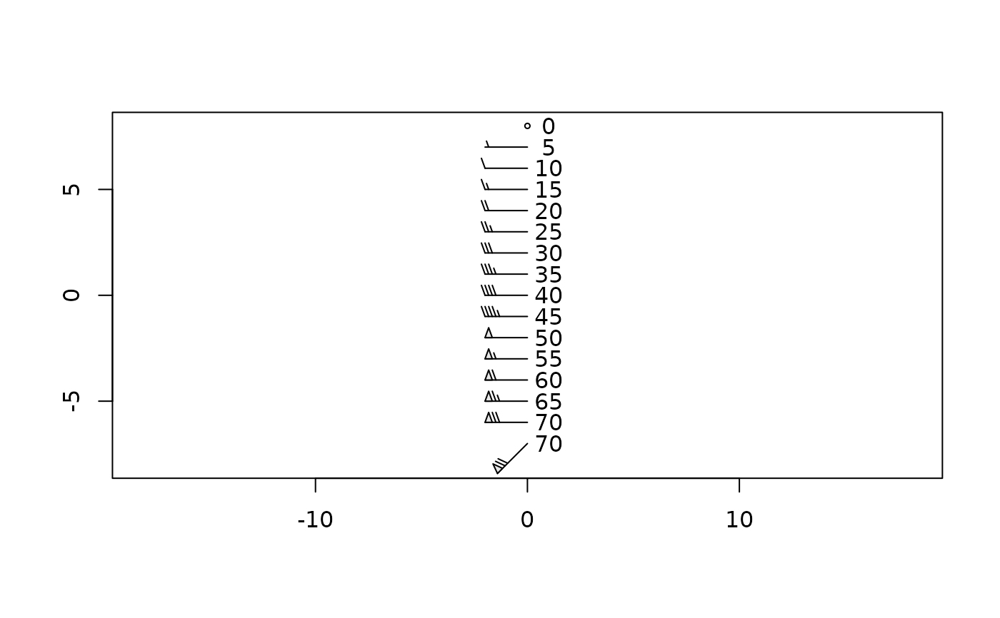

Draw wind barbs on an existing plot. This (at the moment) requires that the plot aspect ratio be 1.
Usage
windBarbs(
x,
y,
u,
v,
scale = 1,
length = 0.5,
step = 10,
lwd = 1,
col = 1,
colFlags = 1,
debug = 0
)Arguments
- x, y
numeric values indicating the locations at which to draw starting points of barbs.
- u, v
numeric values indicating the velocity components in the x and y directions.
- scale
numeric value indicating the length of barbs, as measured in the axis scale.
- length
numeric value indicating the ratio of flag length to barb length.
- step
numeric value indicating the step between speed categories. The default value of 10 is somewhat standard for speeds in knots.
- lwd
line width of barbs.
- col
colour of barbs.
- colFlags
colour of interior of flags. This is 1 by default, to fill the flags with black ink, but lighter colours may be preferable to some eyes.
- debug
integer that controls tell degree of debugging. If this is zero, work proceeds silently. Otherwise, some debugging information will be printed.
Examples
library(atm)
L <- 8
plot(c(-L, L), c(-L, L), asp = 1, type = "n", xlab = "", ylab = "")
y <- -7
windBarbs(0, y, 70 * cospi(45 / 180), 70 * sinpi(45 / 180), scale = 2, colFlags = grey(0.9))
text(1, y, 70)
y <- y + 1
windBarbs(0, y, 70, 0, scale = 2, colFlags = grey(0.9))
text(1, y, 70)
y <- y + 1
for (i in 0:13) {
windBarbs(0, y, 65 - 5 * i, 0, scale = 2, colFlags = grey(0.9))
text(1, y, 65 - 5 * i)
y <- y + 1
}
